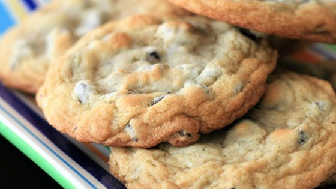
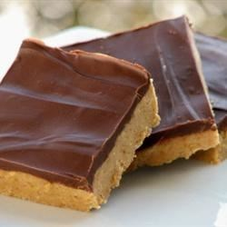
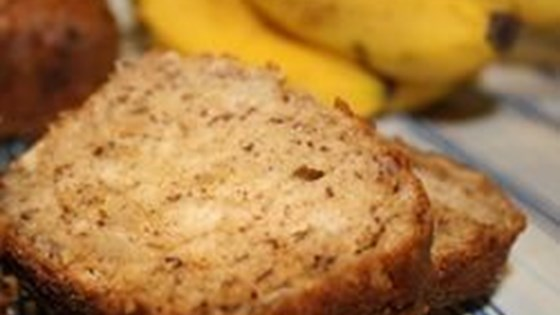

Cake Doughnuts
| Directions | Ingrediants |
|---|---|
| Heat oil in deep-fryer to 375 degrees | 1 quart oil for frying |
| In a large bowl mix Ingrediants | 2 cups flour, 1/2 cup sugar 1 teaspoon salt, 1 tablespoon baking powder 1/4 teaspoon ground cinnamon, 1 dash ground nutmeg |
| mix in butter | 2 tablespoons melted butter |
| stir in milk and egg until smooth | 1/2 cup milk, 1 beaten egg |
| roll into 1/4 inch thickness | |
| Carefully drop doughnuts into oil and fry for 3 minutes |
Chicken Enchiladas
| Directions | Ingrediants |
|---|---|
| preheat oven to 350 degrees | |
| In a medium, non-stick skillet over medium heat, cook chicken until no longer pink and juices run clear. Drain excess fat. Cube the chicken and return it to the skillet. Add the onion, sour cream, Cheddar cheese, parsley, oregano and ground black pepper. Heat until cheese melts. Stir in salt, tomato sauce, water, chili powder, green pepper and garlic. |
4 skinless, boneless chicken breast halves 1 onion, chopped 1/2 pint sour cream 1 cup shredded cheddar cheese 1 tablespoon dried parsley 1/2 teaspoon dried oregano 1/2 teaspoon ground black pepper 1/2 teaspoon salt 15 ounce tomato sace 1/2 cup water 1 tablespoon chili powder 1/3 cup chopped green bell pepper 1 clove garlic, minced |
| Roll even amounts of the mixture in the tortillas. Arrange in a 9x13 inch baking dish. Cover with taco sauce and 3/4 cup Cheddar cheese. Bake uncovered in the preheated oven 20 minutes. Cool 10 minutes before serving. |
8-10 inches flour tortillas 12 ounces of taco sauce 3/4 cup shredded cheddar cheese |
Chocolate Chip Cookies

| Directions | Ingrediants |
|---|---|
| Preheat oven to 350 degrees F | |
| Cream together the butter, white sugar, and brown sugar until smooth. Beat in the eggs one at a time, then stir in the vanilla. Dissolve baking soda in hot water. Add to batter along with salt. Stir in flour, chocolate chips, and nuts. Drop by large spoonfuls onto ungreased pans. |
1 cup butter, softened 1 cup white sugar 1 cup packed brown sugar 2 eggs 2 teaspoons vanilla extract 3 cups all-purpose flour 1 teaspoon baking soda 2 teaspoons hot water 1/2 teaspoon salt 2 cups semisweet chocolate chips 1 cup chopped walnuts |
| Bake for about 10 minutes in the preheated oven, or until edges are nicely browned. |
Peanut Butter Bars

| Directions | Ingrediants |
|---|---|
| In a medium bowl, mix together the butter or margarine, graham cracker crumbs, confectioners' sugar, and 1 cup peanut butter until well blended. Press evenly into the bottom of an ungreased 9x13 inch pan. |
1 cup butter or margarine, melted 2 cups graham cracker crumbs 2 cups confectioners' sugar 1 cup peanut butter |
| In a metal bowl over simmering water, or in the microwave, melt the chocolate chips with the peanut butter, stirring occasionally until smooth. Spread over the prepared crust. Refrigerate for at least one hour before cutting into squares. |
1 1/2 cups semisweet chocolate chips 4 tablespoons peanut butter |
Banana Sour Cream Bread

| Directions | Ingrediants |
|---|---|
| Preheat oven to 300 degrees F (150 degrees C). Grease four 7x3 inch loaf pans. In a small bowl, stir together 1/4 cup white sugar and 1 teaspoon cinnamon. Dust pans lightly with cinnamon and sugar mixture. |
1/4 cup white sugar 1 teaspoon ground cinnamon |
| In a large bowl, cream butter and 3 cups sugar. Mix in eggs, mashed bananas, sour cream, vanilla and cinnamon. Mix in salt, baking soda and flour. Stir in nuts. Divide into prepared pans. |
3/4 cup butter 3 cups white sugar 3 eggs 6 very ripe bananas, mashed 1 (16 ounce) container sour cream 2 teaspoons vanilla extract 2 teaspoons ground cinnamon 1/2 teaspoon salt 3 teaspoons baking soda 4 1/2 cups all-purpose flour |
| Bake for 1 hour, until a toothpick inserted in center comes out clean. |